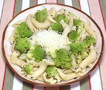

|
Romanesco Cauliflower with PastaItaly / California | ||||
| Serves: Effort: Sched: DoAhead: |
2 main ** 45 min Prep |
You probably paid a small fortune for this fancy cauliflower, so we'll cook it very simply to emphasize the vegetable. Continuing with fancy, use a fancy curly pasta. | |||
|
|
16 1 2 8 1 3 tt tt ----- |
oz cl T oz T T --- |
Romanesco (1) Garlic Herbs, Fresh (2) Pasta Olive Oil Butter Salt Pepper -- Garnish Parmesan |
For the photo it's Fiorentine, but Creste di Gallo and many others are fine too - see our Italian Short Pasta page. Prep (15 min)
|